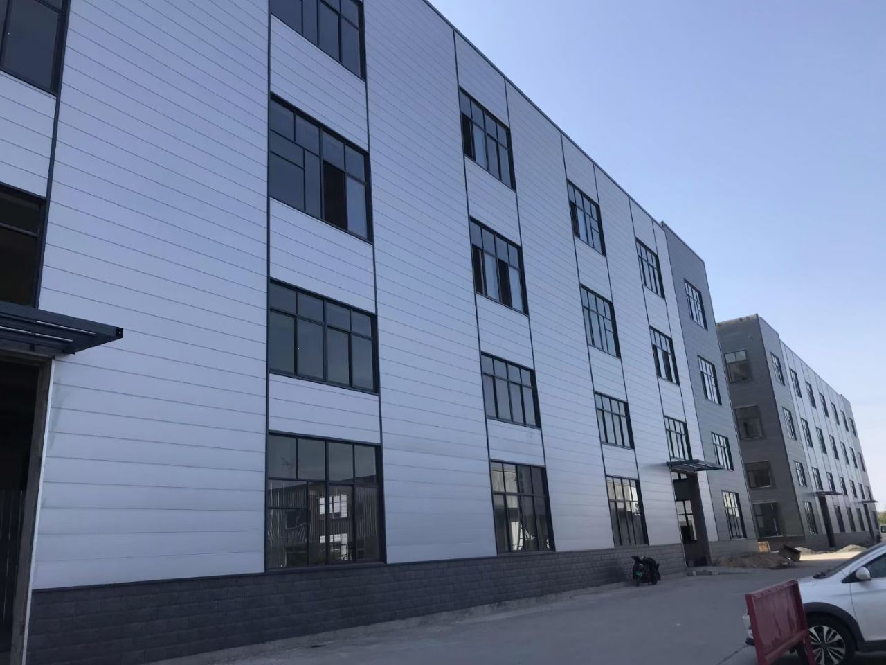
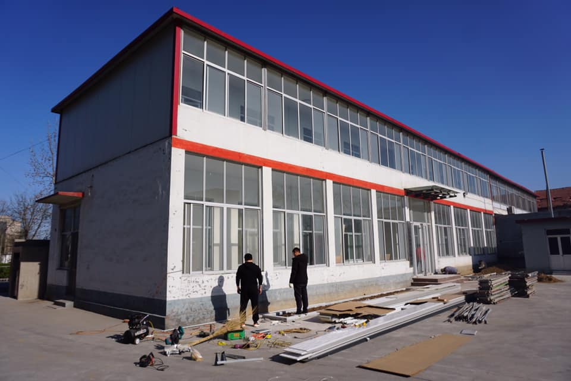
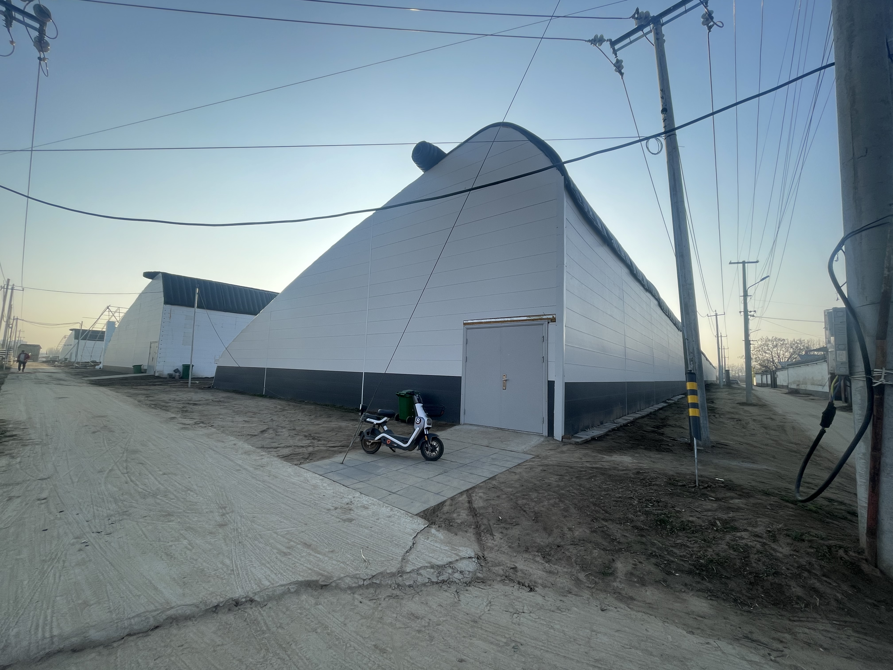
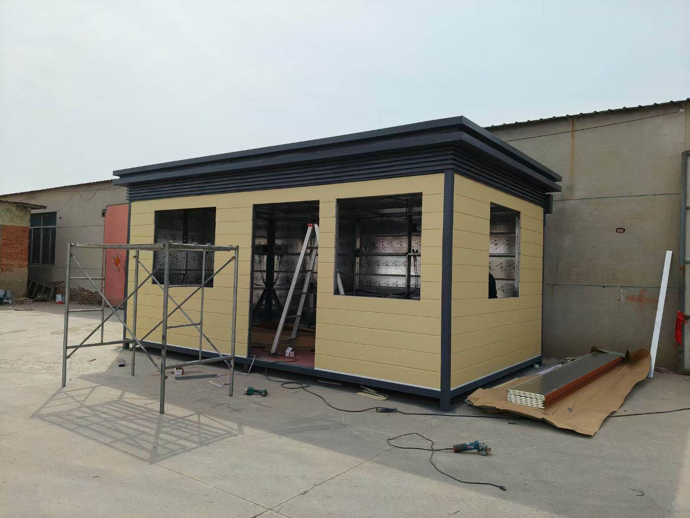
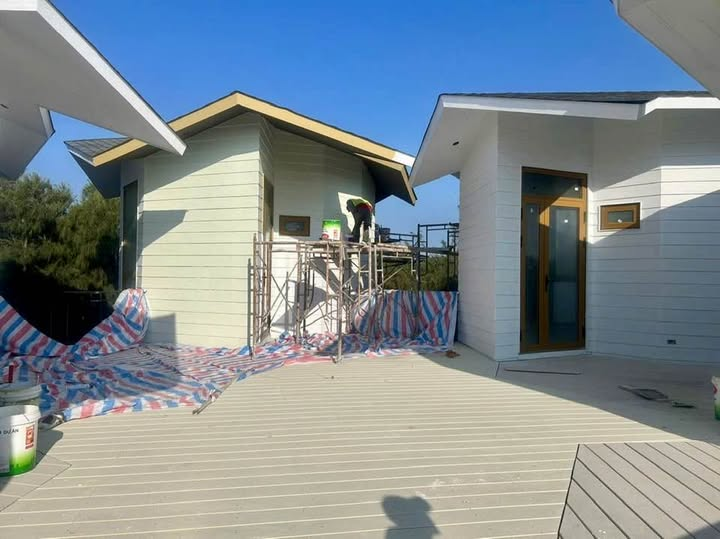
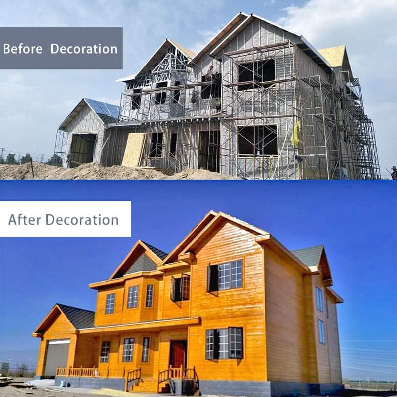
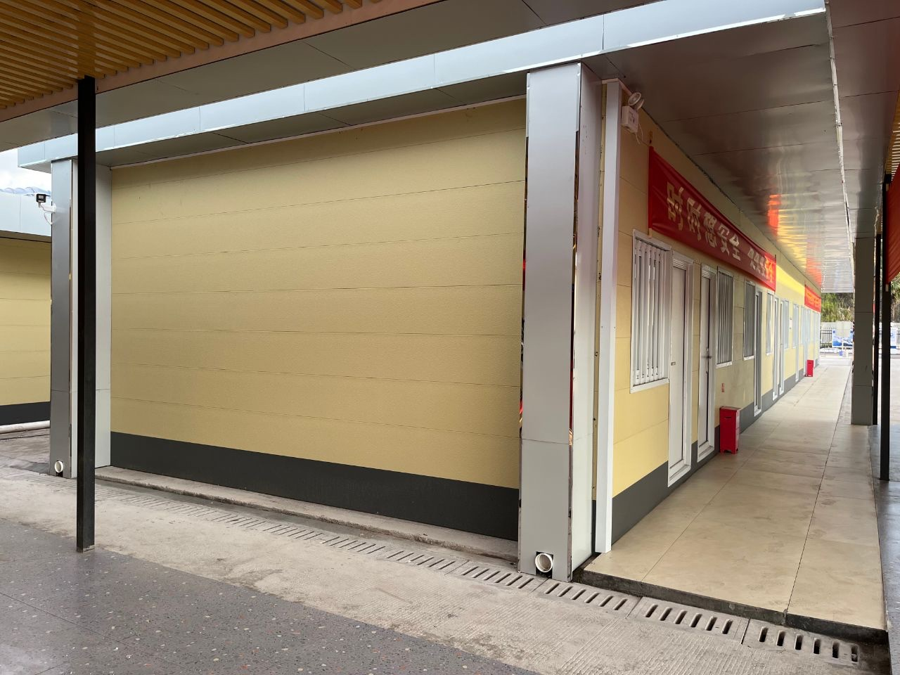
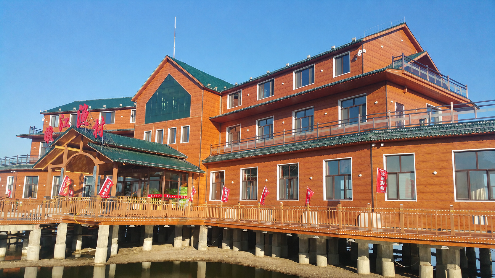
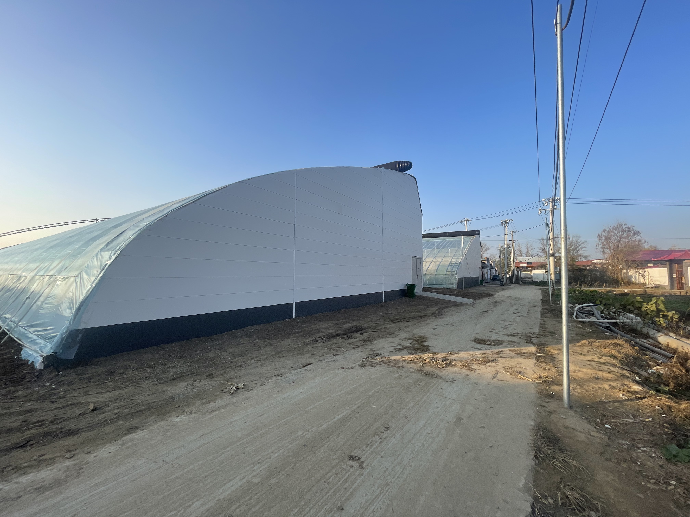

Schedule pressure
Traditional facade work stretches delivery because substrate preparation, wall finish, fixing, and edge treatment move through disconnected site stages.
A Manifesto for Industrialized Exterior Construction
Struvia exists to move exterior construction away from labor-heavy site improvisation and toward installation-first systems: dry, repeatable, predictable, scalable facade workflows for modern building execution.

The conflict is simple: modern projects need speed, predictability, and scalable facade quality, while traditional exterior methods still depend on fragmented trades, wet sequencing, weather-sensitive work, manual coordination, and inconsistent site execution.
Traditional facade work stretches delivery because substrate preparation, wall finish, fixing, and edge treatment move through disconnected site stages.
Exterior quality still depends too heavily on skilled manual coordination, making speed, alignment, and repeatability harder to protect.
Wet or layered exterior workflows are vulnerable to weather windows, site interruption, and inconsistent production rhythm.
When facade appearance, insulation, panel layout, accessories, fixing, and edge details are disconnected, exterior work loses system control.
Buildability is Struvia’s answer to the conflict. It means exterior construction should become easier to plan, easier to install, easier to inspect, and easier to scale. Installation-first systems are not an option for the future; they are the direction modern construction is being forced to take.
Exterior design is connected to material handling, panel layout, fixing sequence, connection logic, and finishing from the start.
Organized panel systems reduce dependence on weather-sensitive wet facade processes and complex site sequencing.
The same exterior method can support prefab housing, commercial envelopes, and large industrial wall areas.
Cleaner alignment and integrated finishing logic help project teams reduce rework and protect facade consistency.
Struvia metal siding panels are presented as exterior construction efficiency systems: lightweight, insulated, modular-friendly, and organized around workflow logic instead of decorative surface display. The system should reduce uncertainty: what starts first, what sets the line, what fixes the wall, and what verifies the result.

Panel preparation, fixing, alignment, trims, finishing, and inspection are treated as one repeatable exterior workflow, not separate site decisions.
Reduce site uncertainty before facade work begins through controlled panel handling and compatible accessories.
Panel rhythm, starter trims, and layout positioning create a repeatable installation baseline.
Simplified fixing and integrated interlocking logic reduce dependence on improvised site coordination.
Edge trims and connection details turn wall areas into controlled exterior infrastructure.
Final alignment checks make exterior quality easier to verify, repeat, and scale under project pressure.
The integrated interlocking metal panel workflow supports organized preparation, layout positioning, simplified fixing, repeatable alignment, cleaner finishing details, and final inspection discipline. The goal is a facade process that crews can understand, repeat, and control instead of re-solving the wall on every site.

Panel handling, alignment, fixing, connection, finishing, and inspection become one buildability system.
Stable substrates reduce later installation complexity.
Clear positioning improves panel rhythm and reduces rework.
Organized fixing logic makes exterior work easier to manage.
Integrated connection logic supports faster exterior assembly.
Accessory systems and final inspection create controlled transitions and finished edges.
The product structure is presented as a complete exterior construction system, not isolated decorative material or a commodity wall panel. Each layer has a role in exterior performance, handling, dry installation, and facade control, so the wall can be executed as infrastructure rather than assembled through fragmented decisions.
Creates the architectural weather skin while supporting corrosion resistance, color stability, and exterior durability.
Supports thermal efficiency, panel stability, lightweight handling, and faster exterior workflow.
Improves moisture resistance, backing stability, and system protection behind the exterior surface.
Supports alignment control, panel connection, edge finishing, and repeatable project execution.
The conflict is not limited to one market. Housing, commercial facades, and industrial envelopes all face exterior execution pressure. The building changes; the need for predictable, labor-efficient facade workflow does not.
Prefab, modular, and standard homes where exterior speed, dry workflow, and consistency affect delivery.

Repeatable exterior workflows for scalable residential construction and faster site completion.

Factory-friendly exterior logic for consistent alignment, handling, and site assembly.

Modern exterior upgrades for everyday homes where simplified facade execution reduces disruption.
Office, retail, and food-service facades where clean exterior rhythm, fast turnover, and predictable site work matter.
Commercial envelopes that need scalable exterior execution, alignment control, and fast delivery.

Brand-facing storefront cladding with fast-install exterior logic and less site disruption.

Architectural commercial facades with efficient exterior upgrading and brand-facing texture.
Large wall areas where repeatable alignment, durability, simplified maintenance, and industrial rhythm matter.
Durable exterior systems for scalable production buildings and large wall-area execution.
Practical exterior panels for efficient workshop envelopes.

Repeatable cladding logic for large wall areas, logistics buildings, and fast envelope closure.

Exterior systems for agricultural buildings needing durability and simplified maintenance.
Struvia should be evaluated through how clearly the system reduces exterior coordination, supports installation control, and scales across real project conditions. The strongest proof is a workflow that can be repeated under pressure, across crews, climates, and building types.
The system is explained through preparation, set-out, alignment, fixing, interlocking connection, edge finishing, and inspection logic.
The same exterior methodology can support prefab housing, commercial envelopes, factories, workshops, warehouses, and poultry houses.
Builders, developers, prefab manufacturers, and project owners need lower exterior complexity, better predictability, and faster delivery.
Share your building type, exterior workflow, climate, and installation needs. Struvia can help you evaluate fast-install exterior systems around project execution, dry workflow, repeatability, and buildability.